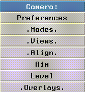
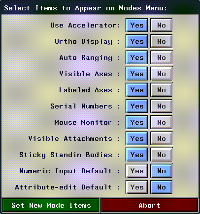

[N-World Contents] [Book Contents] [Prev] [Next] [Index]
Viewing Objects
You use the Camera menu to adjust both global preferences for N-Geometry and camera specific preferences (such as film format and lens focal length):

Figure 5.1 Camera menu
Modes
Figure 5.2 The Modes submenu
- You can customize this menu; (CTRL-*) on Camera>Modes to add or remove items from the menu using the pop-up shown in Figure 5.3.

Figure 5.3 Pop-up menu for specifying which items appear on the Modes menu
- If you (CLICK-L) on Yes to add an item to the menu, or No to remove it, then (CLICK-L) on the Set New Mode Items box to update the menu.
Figure 5.4 The modes menu for turning multiple preferences on and off
Elements on the mode menu are described in Table 5.1:
Table 5.1 Selecting modes for N-Geometry
|
Mode
|
Description
|
|---|
Use
Accelerator
|
Uses accelerated display routines, if available.
|
|
Ortho Display
|
Toggle display between orthographic and perspective display of objects.
|
|
Auto Ranging
|
Enables auto ranging mode, which automatically adjusts the hither and yon clipping planes based on the previous frame. When auto ranging mode is turned off, the hither and yon planes are fixed (constant). See a description of Auto Hither/Yon on page 7-10 for more information.
|
|
Visible Axes
|
Specifies whether global x, y, and z axes are displayed in the N-Geometry window.
|
|
Labeled Axes
|
Specifies whether the axis labels (x, y, and z) are displayed at the ends of the global axes.
|
|
Serial Numbers
|
Displays the serial number of the highlighted element in the upper-left corner of the view window.
|
Visible
Attachments
|
Displays scaling centers and rotation axes, if any, in the view window.
|
|
Sticky Standin Bodies
|
Displays boxes for selected objects at all times. If this is off, stand-in bodies are used only when moving the camera.
|
|
Numeric Input Default
|
Brings up a menu that allows you to type in explicit values when you (SHIFT-L) with an element selected.
|
|
Attribute-Edit Default
|
By default, the body modify menu is displayed when you (SHIFT-L) on an element. If you set this to Yes, the Attributes Editor menu is displayed by default when you (SHIFT-L) on the element.
|
Views
A view describes the camera's position and aim location (as well as other camera parameters, such as view angle and aspect ratio).
You can save, create, delete, name, and restore views. For example, you might want to capture a view while editing a complicated object in order to be able to switch quickly between views you have selected on opposite sides of the object.
Figure 5.5 The Initial Camera View is included by default on the list of saved views
- Note. It's a good idea to leave the initial camera view alone, so that you can always reorient yourself to the global axes.
Figure 5.6 A pop-up menu lets you select, rename, or delete a saved view
You can also use the following hot keys to quickly align the camera with the various axes:
Align
Changes the orientation of the camera to align it with one of the global axes.
When fixed-aim is in effect, the camera swings around the aimpoint to align itself to the axis and so changes its position while remaining aimed at the fixed aimpoint. When fixed-aim is turned off, the camera does not move but simply pans or tilts in place to get the new orientation. Since reorienting the camera changes the aimpoint, objects in the old view might disappear after the realignment.
Aim
Sets the aimpoint of the camera.
Level
Sets the rotation around the camera line-of-sight to zero, that is, remove all camera roll and keep the camera as upright as possible.
Overlays
Display two types of overlay in the N-Geometry window:
Figure 5.7 TV-safe areas overlay
Figure 5.8 Field chart overlay
When you're done, you can (CLICK-L) on an open area of the N-Geometry window to get rid of the overlays.
[N-World Contents] [Book Contents] [Prev] [Next] [Index]
 Another fine product from Nichimen documentation!
Another fine product from Nichimen documentation!
Copyright © 1996, Nichimen Graphics Corporation. All rights
reserved.